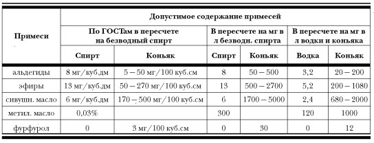

Сивушное масло и другие примеси

Несомненным достоинством водки, по мнению ее апологетов и почитателей, является чистота, то есть практически полное отсутствие примесей. Наиболее известным из них является так называемое сивушное масло. На бытовом уровне, да и в литературе часто используется выражение «сивушные масла». С точки зрения науки употребление множественного числа в данном случае бессмысленно, так как предполагает наличие набора неких сивушных масел. На самом деле сивушное масло представляет собой смесь высших (С3–С10) одноатомных алифатических спиртов, эфиров и других соединений (всего около 40 компонентов, 27 из которых идентифицировано), получаемых при ректификации спирта-сырца (и дистилляции алкогольных напитков. — Прим. авт. ). Часть из них неизбежно остается в ректификате.[47] Каждый компонент имеет свое название, и только для обозначения их смеси применяется термин «сивушное масло», всегда употребляемый в единственном числе. В нашей стране сивушное масло на бытовом уровне буквально предано анафеме и у обывателя устойчиво ассоциируется с чем-то вредным и вонючим. Между тем вкус и аромат всех вин и мировых дистиллятов, включая коньяк и виски, наряду с целым спектром альдегидов и эфиров, во многом определяется присутствием этого самого сивушного масла.
Предельно допустимые концентрации основных примесей в алкогольных напитках в нашей стране жестко регламентируются существующими нормами, так называемыми ГОСТами. В области крепких алкогольных напитков существует всего два основных ГОСТа — на этиловый спирт и на коньяк. Остальные (водка, настойки, ликеры и т. п.) не в счет, так как регламентируемые ими напитки предписано изготавливать из ректификованного этилового спирта, и содержание примесей в них определяется соответствующими требованиями к этиловому спирту. Коньяк же в нашей стране является единственным удостоенным ГОСТа представителем группы напитков-дистиллятов. Поэтому очень интересно сравнить требования по содержанию примесей в водке и в коньяке. Сделать это, просто сравнивая приведенные в ГОСТах цифры, невозможно, поскольку, не знаю уж по какой причине, в разных ГОСТах они даны в разных единицах измерения. Более того, все цифры даны применительно к 100 %-ному, так называемому безводному, спирту, в то время как абсолютное большинство пьющего населения употребляет гораздо менее крепкие напитки. Пришлось произвести несложные арифметические вычисления, чтобы свести все это разнообразие в единую таблицу и привести к одной единице измерения, показывающей, какое содержание примесей в мг допускается в одном литре 40 %-ных водки и коньяка. В основу положены ГОСТ на этиловый спирт,[48] ГОСТ на коньячный спирт[49] и ГОСТ на коньяк.[50]
Полученная картина дает прелюбопытнейший материал для размышлений. Лимитирование примесей в алкогольных напитках, очевидно, преследует две цели: забота о здоровье наших граждан и поддержание неких вкусовых стандартов. О последнем явно говорит правая колонка нижеприведенной таблицы. Альдегиды, эфиры и сивушное масло лимитируются не только по верхней границе, но и по нижней. Другими словами, в коньяке не допускается содержание примесей меньше некоторого количества. Это невозможно объяснить с точки зрения токсичности заботой о здоровье граждан. Просто, очевидно, при их отсутствии или уменьшении ниже регламентированного предела коньяк перестает быть коньяком, так как эти примеси активно участвуют в формировании его вкусоароматического букета.

А вот цифры в той же колонке (относящейся к коньяку), определяющие верхнее значение нормы, видимо, указывают на опасность для здоровья, возникающую при их превышении. Следовательно, содержание указанных примесей в любых алкогольных напитках (по крайней мере, 40-градусных) в пределах приведенных значений для коньяка является безопасным для здоровья. Этот вывод является категоричным и обсуждению не подлежит, так как наши санитарные службы костьми лягут, но не допустят в своих нормативных документах ни малейшей опасности для здоровья потребителей.
А теперь посмотрим на соответствующие цифры для водки. Видно, что с точки зрения токсичности они абсолютно бессмысленны. Особенно хорошо это видно на примере сивушного масла. ГОСТ на коньяк говорит, что сивушное масло безвредно в концентрации до 2000 мг на литр, а ГОСТ на водку не допускает его содержание выше 2,4 мг на литр, то есть почти в 1000 раз (!) меньше. Точно так же — фурфурол. В водке он вообще не допускается, а в коньяке — пожалуйста, будьте любезны.
Абсолютно ясно, что цифры, указанные в ГОСТе на водку, никакого отношения к токсичности не имеют. Иначе они были бы точно такими же, как в коньяке. Единственное логическое объяснение этих значений лежит в области все той же органолептики. Видимо, если указанные пределы будут превышены, то водка потеряет характерный для нее вкус и аромат. Лично у меня вызывает большие сомнения, что приведенные в ГОСТе цифры всерьез обосновывались заботой об органолептике. Скорее всего, они являются следствием развязанной еще в конце XIX века борьбы за «чистоту питей», когда война с примесями стала самоцелью. ГОСТ на коньяк со всей очевидностью показывает бессмысленность этой борьбы с точки зрения токсичности, а с точки зрения органолептики, похоже, эти цифры никто не анализировал. Скорее всего, то, что современные российские стандарты допускают содержание в спирте, а следовательно, и в водке каких-то минимальных количеств примесей, является вынужденным компромиссом между унаследованным от царской монополии стремлением избавиться от них вообще и экономически оправданными техническими возможностями современных производств. И ни токсичность, ни органолептика к ГОСТу на водку не имеют никакого отношения.
И если при советской власти жупел чистоты (безвредности) водки являлся аргументом в борьбе с самогоноварением, то в настоящее время ее «чистота» является чисто (простите за тавтологию) маркетинговым ходом в борьбе за симпатии покупателей. Благо, что эта идея ложится на хорошо подготовленную в течение уже более ста лет основу. А то, что под этой основой нет и никогда не было фундамента, замороченный потребитель и знать не знает. Но помимо общих рассуждений с позиции здравого смысла существуют данные научных исследований, проведенных учеными лаборатории токсикологии НИИ наркологии Минздрава России под руководством профессора В. П. Нужного по изучению токсичности коньяка и виски по сравнению с водкой.[51] Результаты этих исследований дают почву для подозрения, что в свое время царское правительство совершило преступление против собственного народа, которое продолжается уже более ста лет. Тщательно методически выверенные исследования, проведенные на крысах, показали, что с точки зрения медицинских показателей коньяк, виски и водка совершенно одинаковы. Но водка вырвалась вперед по одному показателю — к водке быстрее наступало привыкание. А привыкание — это не что иное, как алкоголизм. Этому есть и теоретическое объяснение. Известно, что чем чище наркотик, тем он страшнее. «Грязный» опиум надо принимать довольно долго, чтобы получить необратимую зависимость, а сделанный из него «чистый» героин может сделать из человека своего раба за один, максимум два укола. А этиловый спирт относится к сильнодействующим наркотикам. В ГОСТе за 1972 год (ГОСТ 18300-72) в п. 5.1 так прямо и говорилось:
«Этиловый спирт — легковоспламеняющаяся, бесцветная жидкость с характерным запахом, относится к сильнодействующим наркотикам, вызывающим сначала возбуждение, а затем паралич нервной системы»
В 1982 году редакция этого пункта привела к некоторому сокращению текста:
«Этиловый спирт — легковоспламеняющаяся, бесцветная жидкость с характерным запахом, относится к сильнодействующим наркотикам»
Все последующие ГОСТы продолжали урезать первоначальное определение. 1993 год (ГОСТ 5964-93, п. 7.1):
«Этиловый спирт — легковоспламеняющаяся, бесцветная жидкость с характерным запахом»
И, наконец, в последней редакции ГОСТа за 2000 год (ГОСТ Р 51652-2000, п. 5.2) эта фраза сократилась до:
«Этиловый спирт — бесцветная легковоспламеняющаяся жидкость»
Учитывая, что впервые упоминание о «сильнодействующем наркотике» исчезло из ГОСТа в 1993 году, рискну предположить, что сделано это было под нажимом народившегося к тому времени класса частных собственников. Согласитесь, что делать алкогольные напитки из «бесцветной легковоспламеняющейся жидкости» как-то, скажем так, этичнее, чем из «сильнодействующего наркотика». Как бы там ни было, но вполне возможно, что русский народ уже более ста лет сидит на «алкогольном героине». И все удивляются и бьют тревогу ну почему же в нашей стране алкогольные проблемы имеют намного более тяжелый характер, чем во всех других странах. А вы покажите хоть одну страну, в которой настолько бы преобладала водка.
Косвенно это подтверждает и статистика. В странах, где принято пить напитки, полученные методом дистилляции, а это не только коньяк и виски, но и все бренди, граппы, чачи, текилы и т. п., алкоголизм встречается реже. Грубо говоря, алкоголь — это яд, а чем чище яд, тем он вреднее. Кстати, пресловутое сивушное масло, буквально преданное анафеме нашей пропагандой, играет для организма защитную роль, замедляя процесс окисления алкоголя. Печень при этом успевает справляться с отравляющими последствиями окисления алкоголя, и похмелье будет не таким тяжелым, как от хорошо очищенной водки.[52] Последнее утверждение, казалось бы, входит в противоречие с бытовой практикой. Мне неоднократно приходилось выслушивать утверждение, что после неумеренного потребления коньяка или виски похмельные мучения намного сильнее, чем от такого же количества водки. Смею предположить, что дело здесь не в сивушном масле, а в присутствующих в этих напитках экстрактах дуба, или, как говорят в народе, дубильных веществах.
Как бы то ни было, но на сегодняшний день мы можем уверенно говорить, что с точки зрения физиологического воздействия на организм водка не имеет никаких преимуществ перед иными крепкими алкогольными напитками-дистиллятами:
«Естественные примеси в тех концентрациях, в которых они присутствуют в дистиллированных алкогольных напитках промышленного или домашнего изготовления, не оказывают влияния на острую токсичность этилового спирта» [53]
А это означает, что водка как массовый и фактически безальтернативный напиток появилась в России в результате… откровенной подтасовки. Ведь не чем иным, как заботой о «народном здравии», мотивировался переход на изготовление напитков исключительно из ректификованных спиртов при введении царской винной монополии. И вот вам парадоксы истории: Россия в очередной раз осуществила эксперимент над собой, в результате которого выиграл остальной мир, открывший для себя совершенно новый напиток «vodka». Но при этом «остальной мир» обогатил свое алкогольное меню, а Россия его резко обеднила.